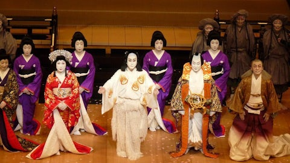

Period: 1603 – 1868 CE
Founder: Tokugawa Ieyasu
Capital(s): Edo (modern Tokyo)
Legacy: Centralized Feudalism, Isolation Policy, Urban Culture, Economic Growth
Introduction
The Tokugawa Shogunate (also called the Edo period) was a feudal regime that brought over 250 years of relative peace, strict social order, and cultural flourishing to Japan. Established by Tokugawa Ieyasu in 1603 after his decisive victory at Sekigahara, the bakufu (shogunal government) governed from Edo, instituting rigid class distinctions, controlling foreign relations through sakoku (national isolation), and fostering a vibrant urban culture. Its legacy shaped modern Japan’s political institutions, societal norms, and artistic traditions.
Origins: From Warring States to Shogunate
In the late 16th century, Japan was fractured into dozens of warring domains under powerful daimyō (feudal lords). The unifiers—Oda Nobunaga and Toyotomi Hideyoshi—laid the groundwork, but it was Hideyoshi’s death in 1598 that sparked a struggle for succession. Tokugawa Ieyasu, one of Hideyoshi’s five regents, seized the moment. At the Battle of Sekigahara in 1600, Ieyasu’s forces crushed a coalition of rival daimyō, clearing the path to supreme power. In 1603, he received the title of shōgun from the emperor, inaugurating the Tokugawa line and the Edo period.

Military Consolidation and Control
Although large-scale warfare subsided after 1600, the Tokugawa maintained strict military readiness. A network of 260 domains (han) was organized under the bakuhan system: each daimyō owed loyalty to the shōgun and maintained a castle garrison, but was carefully monitored. The samurai class, numbering around 300,000, served as both warriors and bureaucrats. Strict weapons bans for peasants and townspeople, plus periodic inspections, deterred rebellion and ensured the shogunate’s monopoly on force.

Government and Legal Innovation
The bakuhan system balanced centralized authority in Edo with limited regional autonomy in the han. Daimyō were required to spend every other year in the capital under the sankin‑kōtai policy, leaving their families behind as hostages during absences. This regulated their finances, limited local militarization, and filled Edo with daimyō processions, stimulating the economy. A codified hierarchy—samurai, peasants, artisans, merchants—was enforced through hereditary status and sumptuary laws.
Infrastructure and Urban Development
Under Tokugawa rule, Japan built an extensive road network—most famously the Tōkaidō linking Edo with Kyoto. Post stations (shukuba‑machi) provided lodging and services, catalyzing local economies. Edo itself grew into one of the world’s largest cities (over one million by the 18th century), replete with castle complexes, merchant quarters, temples, and pleasure districts. Flood control, canal construction, and urban zoning projects transformed the capital into a model of Tokugawa order.

Religion and Social Policies
Buddhism and Shintō were regulated through the terakoya (temple–school) system, which also served as a means of population registration. Christianity, which had proliferated under the daimyō of Kyushu, was brutally suppressed after 1614—Japanese Christians were forced to apostatize or face execution. Neo‑Confucianism became the official ideology, promoting loyalty, filial piety, and social harmony. Peasants were bound to their villages under strict land‑tax regulations, while merchants, though legally low‑status, gained wealth and influence.
Economy and Domestic Trade
Peaceful conditions allowed agriculture to flourish: improved rice varieties, irrigation works, and a nationwide cadastral survey stabilized tax revenues. A domestic cash economy emerged as rice stipends were converted into coin. Merchant guilds (za) gained prominence in castle towns, dealing in rice, sake, textiles, and imported goods from Nagasaki’s limited foreign trade. Financing institutions, such as the rice brokers of Osaka, handled futures contracts, laying the groundwork for modern commerce.
Isolation and Foreign Relations
From the 1630s, the shogunate implemented sakoku: virtually all foreign travel and trade were banned except through a handful of ports. The Dutch at Dejima (Nagasaki) and the Chinese at Nagasaki’s Kōmōbanka enjoyed limited commerce under strict supervision. Korea maintained a tribute‑style embassy to Edo, while Ryūkyū was a vassal state mediating silk and ceramics trade with China. This controlled engagement preserved stability while allowing selective importation of technologies and knowledge (rangaku, “Dutch learning”).
Challenges and Decline
By the late 18th century, demographic pressures, peasant uprisings, and samurai indebtedness strained the system. Restrictive class laws and inflation eroded the samurai’s stipends. Natural disasters—famines, earthquakes, and the Tenpō famine (1833–1837)—exacerbated unrest. Simultaneously, Western powers pressed for trade: Commodore Perry’s “black ships” arrived in 1853, culminating in the unequal treaties of the 1850s. The shogunate’s inability to repel foreign demands undermined its legitimacy.
Cultural and Intellectual Contributions
The Edo period saw a flourishing of the arts: ukiyo‑e woodblock prints by Hokusai and Utamaro, kabuki theater in Edo and Osaka, haikai linked‑verse culminating in Bashō’s “narrow road to the deep north,” and refined tea ceremony schools. Scholarship thrived in the terakoya and han schools, with studies in Confucian ethics, kokugaku (nativist studies), and rangaku introducing Western science, medicine, and astronomy.
Modern Influence and Lasting Legacy
Though the shogunate fell in 1868 during the Meiji Restoration, many Tokugawa institutions endured. The prefectural system reworked han boundaries into modern administrative units. Railroads often followed former Tōkaidō and Nakasendō routes. The consensus‑building methods of the bakuhan system informed early Meiji governance. Edo’s urban culture evolved into modern Tokyo’s vibrant commercial and entertainment districts.
Further Reading and Resources
- "Tokugawa Japan: The Social and Economic Antecedents of Modern Japan" by Eto Shinkichi
- "Edo Culture: Daily Life and Diversions in Urban Japan, 1600–1868" by Eric C. Rath
- "Learning to Bow: Inside the Heart of Japan" by Bruce Feiler
- "The Making of Modern Japan" by Marius B. Jansen
Conclusion
The Tokugawa Shogunate was a paradox of rigid hierarchy and dynamic urban culture. Its enforced peace and isolation allowed Japan to develop unique political, social, and artistic traditions, while sakoku preserved independence from colonial pressures. When the world forced open Japan’s doors in the 19th century, the country harnessed both its Tokugawa heritage and imported ideas to embark on a rapid modernization. Today, echoes of the Edo period remain in Japan’s administrative divisions, its cultural festivals, and its enduring spirit of balance between tradition and innovation.